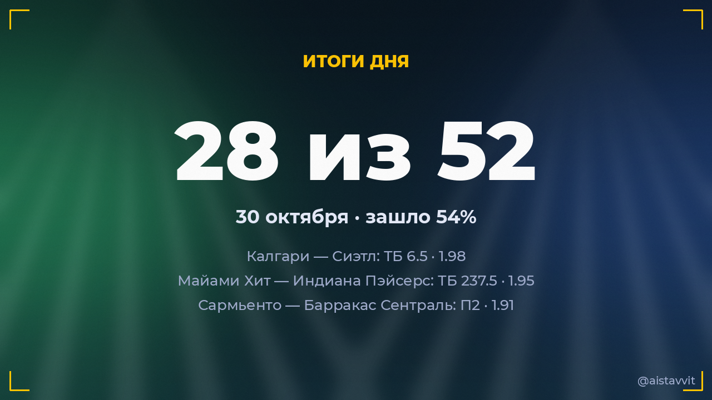

Итоги дня — 30 октября 2026
Зашло 28 из 52 основных прогнозов (54%), ROI дня -9.9%. Каждый прогноз учтён — и заходы, и промахи.

Все прогнозы дня
🎾 Паула Бадоса Хиберт — Хэрриет Дарт
Хэрриет Дарт возьмёт хотя бы сет · 1.571:2 ✅
Хэрриет Дарт возьмёт хотя бы сет · 1.571:2 ✅
⚽ Коньяспор — Галатасарай
ТБ 2.5 · 1.570:4 ✅
ТБ 2.5 · 1.570:4 ✅
⚽ Коринтианс Паранаэнсе — Мирасол
П1 · 1.832:0 ✅
П1 · 1.832:0 ✅
🎾 Надя Подорошка — Кароль Монне
Кароль Монне возьмёт хотя бы сет · 1.531:2 ✅
Кароль Монне возьмёт хотя бы сет · 1.531:2 ✅
⚽ Уракан — Тигре
X2 · 1.590:2 ✅
X2 · 1.590:2 ✅
⚽ Эстудиантес Рио-Куарто — Химнасия Ла-Плата
П2 · 1.871:2 ✅
П2 · 1.871:2 ✅
⚽ Страсбур — Альдосиви
П1 · 1.632:1 ✅
П1 · 1.632:1 ✅
🎾 Кейтлин Кеведо — Джил Тайхманн
Будет 2 сета · 1.862:0 ✅
Будет 2 сета · 1.862:0 ✅
⚽ Сармьенто — Барракас Сентраль
П2 · 1.911:2 ✅
П2 · 1.911:2 ✅
🎾 Татьяна Мария — Валерия Страхова
Будет 2 сета · 1.512:0 ✅
Будет 2 сета · 1.512:0 ✅
⚽ Зюлте-Варегем — Брюгге
П2 и ТБ 1.5 · 1.552:4 ✅
П2 и ТБ 1.5 · 1.552:4 ✅
🏀 Майами Хит — Индиана Пэйсерс
ТБ 237.5 · 1.95145:125 ✅
ТБ 237.5 · 1.95145:125 ✅
🎾 Маттео Берреттини — Алекс де Минор
Будет 2 сета · 1.620:2 ✅
Будет 2 сета · 1.620:2 ✅
⚽ Ницца — Ренн
ТБ 2.5 · 1.615:2 ✅
ТБ 2.5 · 1.615:2 ✅
🎾 Ян-Леннард Штруфф — Нуну Боржеш
Победа: Ян-Леннард Штруфф · 1.662:0 ✅
Победа: Ян-Леннард Штруфф · 1.662:0 ✅
🏒 Калгари — Сиэтл
ТБ 6.5 · 1.986:2 ✅
ТБ 6.5 · 1.986:2 ✅
⚽ Хуарес — Керетаро
Обе забьют — да · 1.613:1 ✅
Обе забьют — да · 1.613:1 ✅
🎾 Алисиа Херреро Линана — Бьянка Андрееску
Победа: Бьянка Андрееску · 1.640:2 ✅
Победа: Бьянка Андрееску · 1.640:2 ✅
🏀 Финикс Санз — Денвер Наггетс
П2 (с ОТ) · 1.57120:127 ✅
П2 (с ОТ) · 1.57120:127 ✅
🎾 Ксинран Сун — Клер Лю
Будет 2 сета · 1.792:0 ✅
Будет 2 сета · 1.792:0 ✅
🎾 Адриан Маннарино — Даниил Медведев
Будет 2 сета · 1.570:2 ✅
Будет 2 сета · 1.570:2 ✅
🎾 Эйла Аксу — Нома Ноа Акугуэ
Будет 2 сета · 1.780:2 ✅
Будет 2 сета · 1.780:2 ✅
⚽ Абха — Аль-Иттихад
Ф1 (+1.5) · 1.671:1 ✅
Ф1 (+1.5) · 1.671:1 ✅
🎾 Лилли Таггер — Ши Хан
Победа: Лилли Таггер · 1.592:1 ✅
Победа: Лилли Таггер · 1.592:1 ✅
🎾 Марина Бассольс Рибера — Алина Чараева
Победа: Алина Чараева · 1.770:2 ✅
Победа: Алина Чараева · 1.770:2 ✅
🎾 Фиона Ферро — Элизабет Мандлик
Элизабет Мандлик возьмёт хотя бы сет · 1.552:1 ✅
Элизабет Мандлик возьмёт хотя бы сет · 1.552:1 ✅
⚽ Дирия — Неом
X2 · 1.511:2 ✅
X2 · 1.511:2 ✅
🎾 Лейре Ромеро Гормас — Юлия Грабер
Победа: Юлия Грабер · 1.551:2 ✅
Победа: Юлия Грабер · 1.551:2 ✅
🏀 Бруклин Нетс — Детройт Пистонс
ТБ 222.5 · 1.9394:110 ❌
ТБ 222.5 · 1.9394:110 ❌
🏀 Миннесота Тимбервулвз — Клипперс
Ф2 (+6.5) · 1.98127:101 ❌
Ф2 (+6.5) · 1.98127:101 ❌
🏀 Бостон Селтикс — Чикаго Буллз
ТБ 236.5 · 1.95125:111 ❌
ТБ 236.5 · 1.95125:111 ❌
⚽ Атлетико Сан-Луис — Atlas
Обе забьют — да · 1.590:1 ❌
Обе забьют — да · 1.590:1 ❌
🏀 Даллас Маверикс — Хьюстон Рокетс
П2 (с ОТ) · 1.50116:111 ❌
П2 (с ОТ) · 1.50116:111 ❌
🏀 Торонто Рэпторс — Орландо Мэджик
Ф2 (+5.5) · 1.95114:121 ❌
Ф2 (+5.5) · 1.95114:121 ❌
🏀 Филадельфия Сиксерс — Нью-Йорк Никс
П2 (с ОТ) · 1.6598:93 ❌
П2 (с ОТ) · 1.6598:93 ❌
⚽ Шеффилд Юнайтед — Рексем
ТБ 2.5 · 1.881:0 ❌
ТБ 2.5 · 1.881:0 ❌
🏒 Флорида — Виннипег
ТМ 6.5 · 1.745:2 ❌
ТМ 6.5 · 1.745:2 ❌
🏀 Вашингтон Уизардс — Шарлотт Хорнетс
П2 (с ОТ) · 1.8595:79 ❌
П2 (с ОТ) · 1.8595:79 ❌
🏒 Вегас — Нью-Джерси
П1 (с ОТ и буллитами) · 1.872:5 ❌
П1 (с ОТ и буллитами) · 1.872:5 ❌
🎾 Алис Тюбелло — Хасмин Ортенси
Будет 2 сета · 1.862:1 ❌
Будет 2 сета · 1.862:1 ❌
⚽ Каза Пия — Спортинг
Ф1 (+1.5) · 1.890:2 ❌
Ф1 (+1.5) · 1.890:2 ❌
⚽ Лилль — Ланс
ТБ 2.5 · 1.861:0 ❌
ТБ 2.5 · 1.861:0 ❌
⚽ Вильярреал — Эспаньол
П1 и ТБ 1.5 · 1.580:1 ❌
П1 и ТБ 1.5 · 1.580:1 ❌
⚽ Эльферсберг — Майнц 05
П2 · 2.094:1 ❌
П2 · 2.094:1 ❌
⚽ Аш-Шабаб — Аль-Ахли
П2 · 1.956:1 ❌
П2 · 1.956:1 ❌
⚽ Гавр — ПСЖ
Ф1 (+1.5) · 1.931:5 ❌
Ф1 (+1.5) · 1.931:5 ❌
🎾 Хулия Риера — Солана Сьерра
Победа: Солана Сьерра · 1.592:1 ❌
Победа: Солана Сьерра · 1.592:1 ❌
🎾 Эльза Жакмо — Елизара Янева
Будет 2 сета · 1.732:1 ❌
Будет 2 сета · 1.732:1 ❌
🎾 Томми Пол — Карлос Алькарас
Томми Пол возьмёт хотя бы сет · 1.540:2 ❌
Томми Пол возьмёт хотя бы сет · 1.540:2 ❌
🎾 Анна Блинкова — Мартина Кубка
Победа: Мартина Кубка · 1.512:0 ❌
Победа: Мартина Кубка · 1.512:0 ❌
🎾 Александра Эала — Диана Шнайдер
Будет 2 сета · 1.801:2 ❌
Будет 2 сета · 1.801:2 ❌
🏀 Голден Стэйт — Лейкерс
П2 (с ОТ) · 1.65112:95 ❌
П2 (с ОТ) · 1.65112:95 ❌
← предыдущий день · следующий день → · статистика бота · прогнозы на сегодня · Telegram-канал